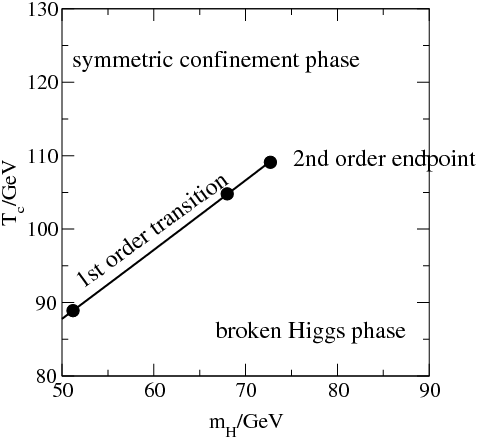

This summer I am working on Thermal (Quantum) Field Theories and their applications to Particle Physics and Cosmology. As of early July, I am working on two sequential aspects: thermal corrections to theories and (with it) the study of phase transitions in particular BSM models.
Higgs Phase Diagram, indicating BSM physics (credits: Mikko Laine)
My other line of research focuses on Neutrinos (BSM Physics).
Physics Day, University of New Mexico. April 13th, 2024
Awarded 2nd best talk.
Although similar to the talk below, this one was oriented to a physics-based audience. Further details were discussed and a slightly more technical language was used.
UROC Conference, University of New Mexico. April 12th, 2024
This talk was intended for a broad, general audience.